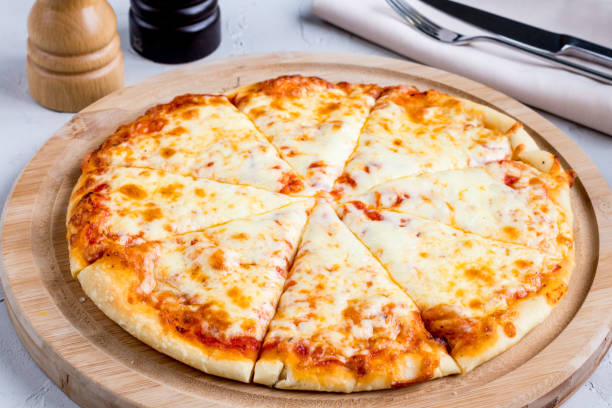

Margherita Pizza

Description
Margherita pizza is a classic Italian dish that celebrates simplicity and freshness.
Originating from Naples, it features a thin, chewy crust topped with a vibrant tomato sauce made from San Marzano tomatoes, creamy fresh mozzarella cheese, and fragrant basil leaves.
A drizzle of extra-virgin olive oil and a sprinkle of salt finish the pizza, highlighting the natural flavors of each ingredient.
The red tomatoes, white mozzarella, and green basil are said to represent the colors of the Italian flag, making Margherita pizza not only delicious but also a symbol of Italian pride and tradition
Ingredients
- 1 batch pizza dough (homemade or store-bought, about 1 pound)
- 1 large can (28 ounces) whole San Marzano tomatoes or good-quality canned tomatoes
- 8–12 ounces fresh mozzarella cheese, torn or sliced
- Handful of fresh basil leaves
- 2 teaspoons extra-virgin olive oil, plus more for drizzling
- 2 small garlic cloves (optional, for sauce)
- ½ teaspoon sea salt or kosher salt, plus more for sprinkling
- Red pepper flakes (optional)
Steps
- If making dough from scratch, combine flour, yeast, water, salt, and olive oil. Knead until smooth and let rise until doubled in size (about 1–2 hours). Alternatively, use store-bought dough and let it come to room temperature.
- Pour the canned tomatoes (with juice) into a bowl. Crush by hand or pulse in a food processor with olive oil, garlic (if using), and salt until smooth.
- Preheat your oven to 500°F (260°C) or as hot as it will go. Place a pizza stone or baking steel on the upper rack if you have one.
- On a floured surface or parchment paper, stretch or roll the dough into a 10–12 inch round. Transfer to a baking sheet or pizza peel dusted with cornmeal.
- Spread about ½–¾ cup of tomato sauce evenly over the dough, leaving a 1-inch border around the edges. Distribute mozzarella evenly over the sauce. Drizzle lightly with olive oil.
- Bake the pizza on the top rack (or on a preheated stone/steel) for 10–12 minutes, until the crust is golden and the cheese is bubbling and just turning golden.
- Remove from the oven. Top generously with fresh basil leaves, a drizzle of olive oil, and a sprinkle of salt. Add red pepper flakes if desired. Slice and enjoy.